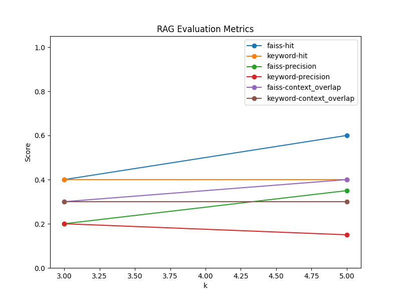

| query | mode | k | topk_results | relevant | hit | precision | context_overlap |
|---|---|---|---|---|---|---|---|
| teach counting using ducks | faiss | 3 | Let's explore Counting Fun with Ducks!, | Can you count the Counting Fun with Ducks with me? | Look! Here is a colorful Counting Fun with Ducks! | duck, count | 1 | 0.666667 | 1.0 |
| learning colors for kids | faiss | 3 | color, balloon | 0 | 0.000000 | 0.0 | |
| animal sounds for toddlers | faiss | 3 | animal, sound | 0 | 0.000000 | 0.0 | |
| numbers with animals | faiss | 3 | Let's explore Counting Fun with Ducks!, | Look! Here is a colorful Counting Fun with Ducks! | Can you count the Counting Fun with Ducks with me? | number, count | 1 | 0.333333 | 0.5 |
| bedtime story for kids | faiss | 3 | sleep, story | 0 | 0.000000 | 0.0 | |
| teach counting using ducks | faiss | 5 | Let's explore Counting Fun with Ducks!, | Can you count the Counting Fun with Ducks with me? | Look! Here is a colorful Counting Fun with Ducks! | Great job! See you next time! | duck, count | 1 | 0.500000 | 1.0 |
| learning colors for kids | faiss | 5 | Look! Here is a colorful Counting Fun with Ducks! | color, balloon | 1 | 1.000000 | 0.5 |
| animal sounds for toddlers | faiss | 5 | animal, sound | 0 | 0.000000 | 0.0 | |
| numbers with animals | faiss | 5 | Let's explore Counting Fun with Ducks!, | Look! Here is a colorful Counting Fun with Ducks! | Can you count the Counting Fun with Ducks with me? | Great job! See you next time! | number, count | 1 | 0.250000 | 0.5 |
| bedtime story for kids | faiss | 5 | Let's explore Counting Fun with Ducks!, | sleep, story | 0 | 0.000000 | 0.0 |
| teach counting using ducks | keyword | 3 | Let's explore Counting Fun with Ducks!, | Look! Here is a colorful Counting Fun with Ducks! | Can you count the Counting Fun with Ducks with me? | duck, count | 1 | 0.666667 | 1.0 |
| learning colors for kids | keyword | 3 | | | | color, balloon | 0 | 0.000000 | 0.0 |
| animal sounds for toddlers | keyword | 3 | | | | animal, sound | 0 | 0.000000 | 0.0 |
| numbers with animals | keyword | 3 | Let's explore Counting Fun with Ducks!, | Look! Here is a colorful Counting Fun with Ducks! | Can you count the Counting Fun with Ducks with me? | number, count | 1 | 0.333333 | 0.5 |
| bedtime story for kids | keyword | 3 | sleep, story | 0 | 0.000000 | 0.0 | |
| teach counting using ducks | keyword | 5 | Let's explore Counting Fun with Ducks!, | Look! Here is a colorful Counting Fun with Ducks! | Can you count the Counting Fun with Ducks with me? | Great job! See you next time! | duck, count | 1 | 0.500000 | 1.0 |
| learning colors for kids | keyword | 5 | | | | | color, balloon | 0 | 0.000000 | 0.0 |
| animal sounds for toddlers | keyword | 5 | | | | | animal, sound | 0 | 0.000000 | 0.0 |
| numbers with animals | keyword | 5 | Let's explore Counting Fun with Ducks!, | Look! Here is a colorful Counting Fun with Ducks! | Can you count the Counting Fun with Ducks with me? | Great job! See you next time! | | number, count | 1 | 0.250000 | 0.5 |
| bedtime story for kids | keyword | 5 | sleep, story | 0 | 0.000000 | 0.0 |